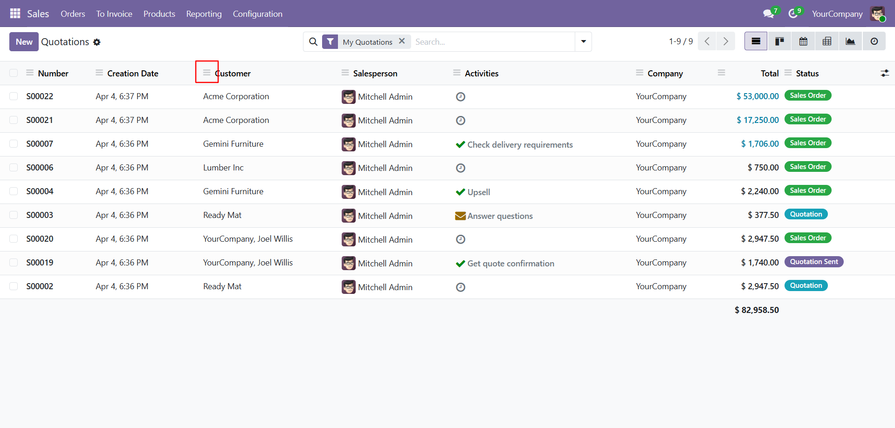
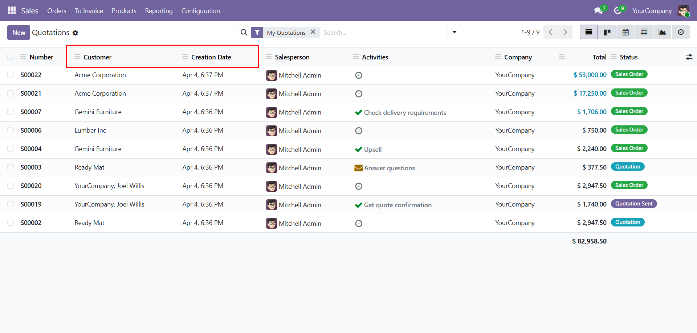

Let backend users drag and reorder columns in Odoo list views, with the selected layout remembered per view in the browser.

Standard Odoo list views follow the column order defined in XML. This module gives users a lightweight way to personalize their working layout without changing the underlying view definition.
Drag-and-drop reordering with persistent per-view storage.
Users can drag labeled field columns directly from the list header.
Each list view keeps its own saved column order using the Odoo view key.
The selected order is stored in browser local storage and restored on revisit.

The selected order is stored in the browser local storage for the current user and browser.
No. The module only changes how the columns are displayed in the browser at runtime.
The module normalizes the saved order and keeps only columns that still exist in the current view.
No. Drag reordering is intentionally limited to non-small screens for usability.
Need customization, support, or implementation help for this module? Contact us for installation assistance, feature enhancements, issue resolution, and module-specific development.
Email: technostellar03@gmail.com